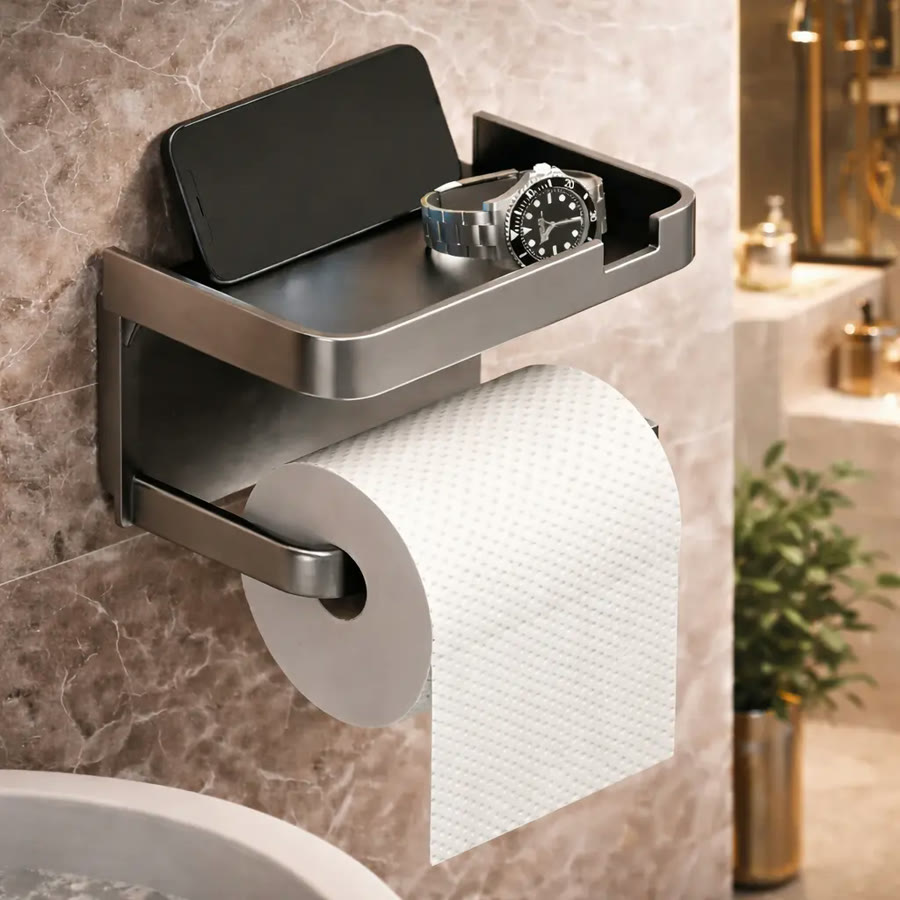
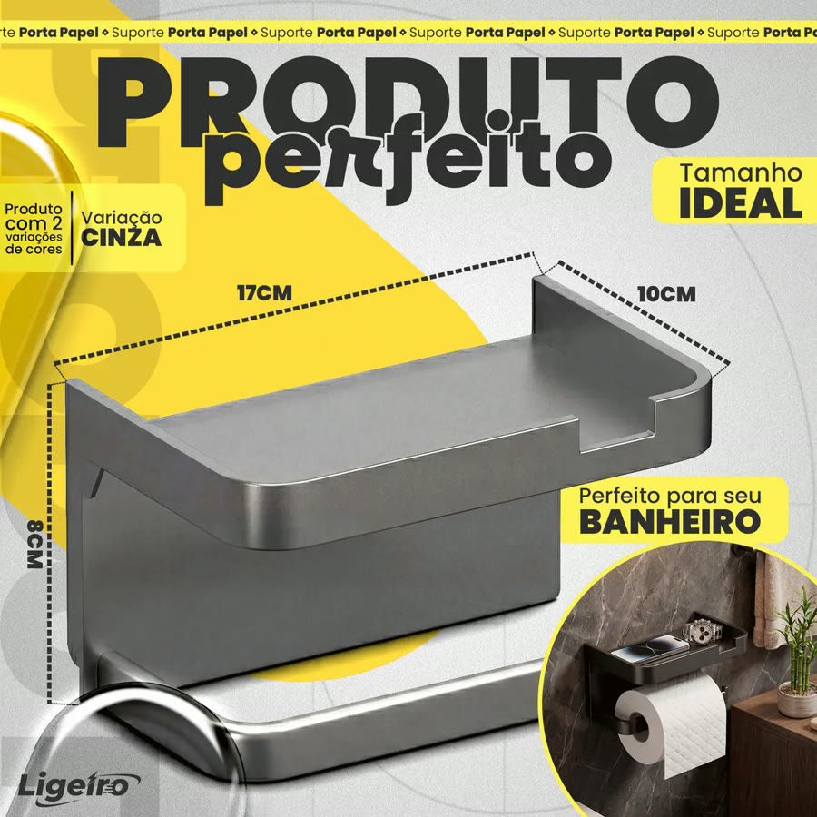
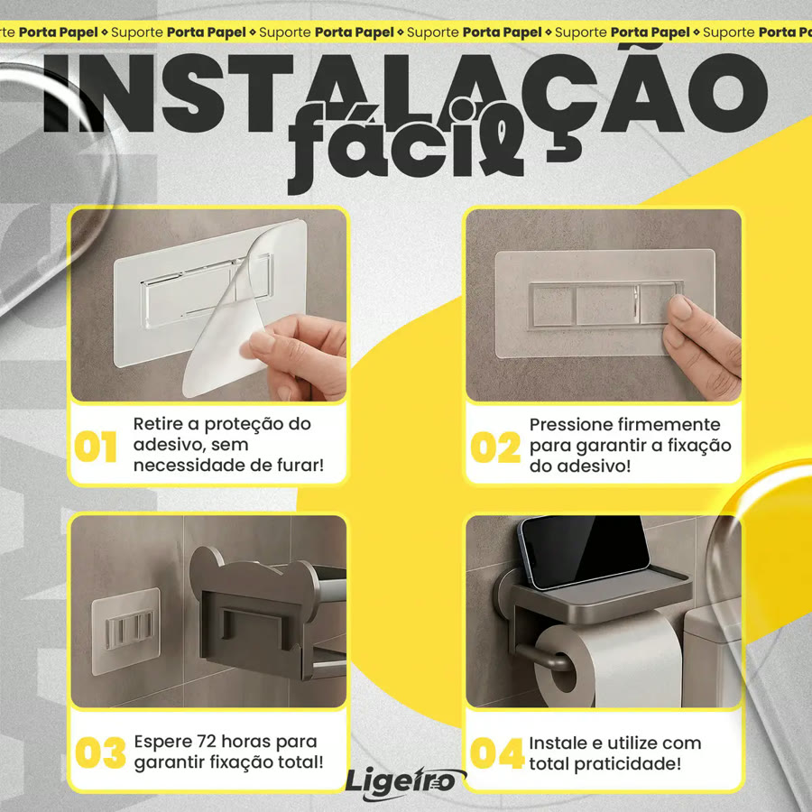
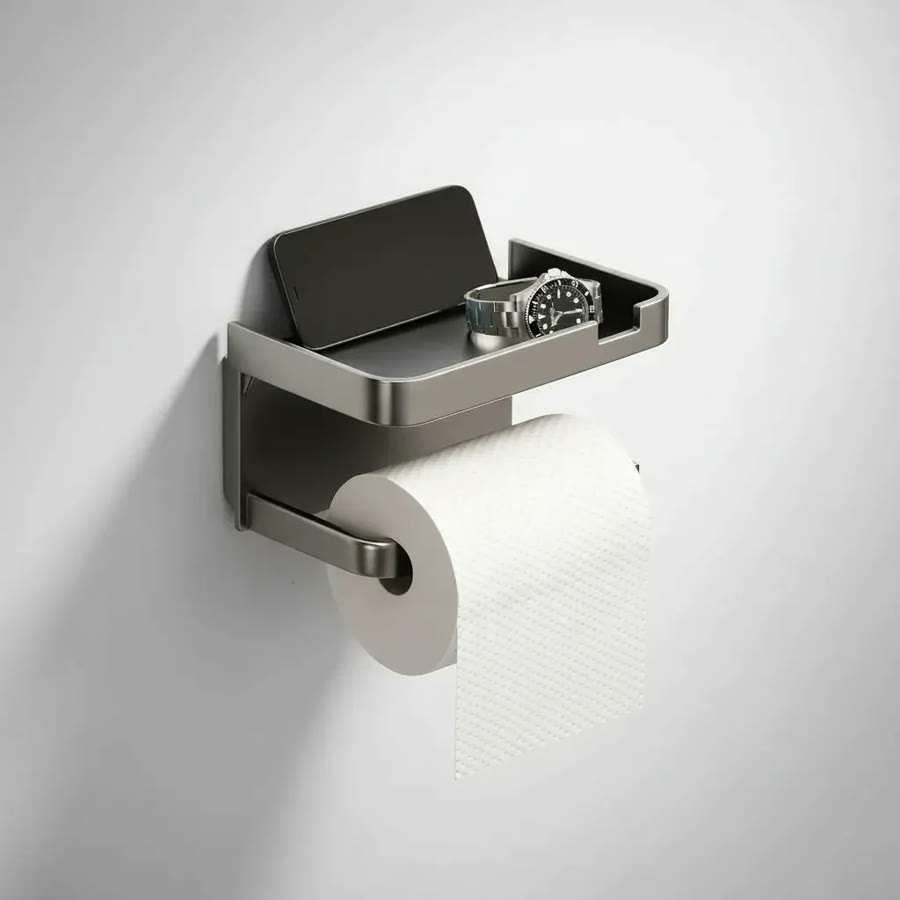
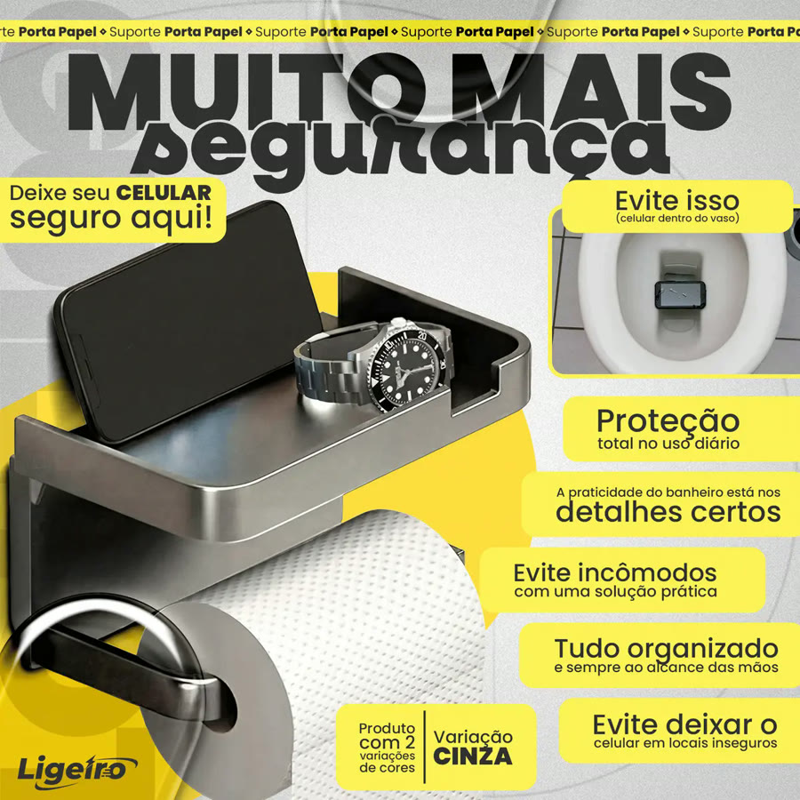

Achado nº 38
Suporte de papel higiênico adesivo com prateleira para celular






O que diz a página oficial do produto
- É um suporte de papel higiênico de plástico cinza com uma prateleira em cima
- Na prateleira dá para apoiar o celular ou deixar um segundo rolo de papel
- Instala sem furar: vem com uma base adesiva, sem precisar de ferramenta
- Segundo as fotos do anúncio, a instalação é tirar a proteção do adesivo, pressionar firme e esperar 72 horas antes de usar
- Segundo o anúncio, suporta até 5 kg
- Mede 17 cm de largura, 10 cm de profundidade e 8 cm de altura
- No Mercado Livre, tem nota 4,5 com mais de 7.300 avaliações e mais de 10 mil vendidos
Link de afiliado: se você comprar por ele, a Achadaria pode receber uma comissão, sem custo extra para você. Preço, estoque e entrega são da loja e podem mudar; confira lá antes de comprar.